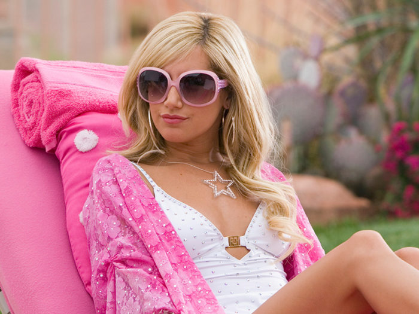
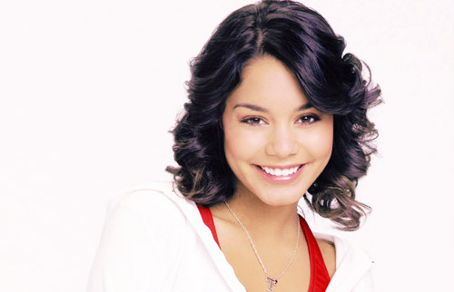

Rozi H
Rozi is a senior at Lakeside School in Seattle, WA. In addition to playing basketball and running cross-country and track at Lakeside, Rozi participates in her school community as the president of Black Student Union and a member of the Student Affinity Leadership Team, and as a Senior Leader. Rozi first started to see the unfortunate reality of police brutality after the deaths of Tamir Rice, Eric Garner, and Michael Brown in 2014. As the years have gone by and hundreds of police brutality cases have resulted in acquitted officers, Rozi realizes that educating those around her is now more important than ever. Many feel removed from this situation, but Rozi believes it is important to realize that this could happen to anyone.
Mikayla K

Mikayla is a junior at Holy Names Academy in Settle, WA.At Holy Names, she is very involved in school life. She serves as a ASB representative, as a leader of both Multicultural Student Union and Black Student Union, and as a student ambassdor.She is also heavily involved in community service. With the Catholic Community Services, she tutors twice a week. Additionally, she meets once a week with her youth advocacy group 206 Forward. Mikayla is passionate about spreading the word about Police Brutality because she doesn't think that teens her age realize how much of an issue it is. Every minority life is precious, but at the same time it could be taken at any moment.This is something that many teens fail to realize. Stay woke.
Khloe B

A rising senior at Kentwood High School in Covington, Washington, Khloe Bucknor is a very bright, sociable millennial, who stands for justice among all races and genders. Khloe is currently enrolled in the Running Start program at her local community college, on the path to receiving her Associates in Computer Science at the end of her senior year. She enjoys coding, a newfound hobby, alongside spending time with her family and friends. As a young, African-American girl, she sees what goes on in the news regarding inequality for people of color. Having the opportunity to be apart of T.A.P. In America is only the beginning of a bigger movement for Khloe's involvement in the community. Khloe believes that everyone, of all races and genders, young or old, can be involved for the greater good of the world.